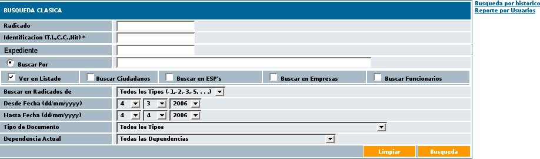
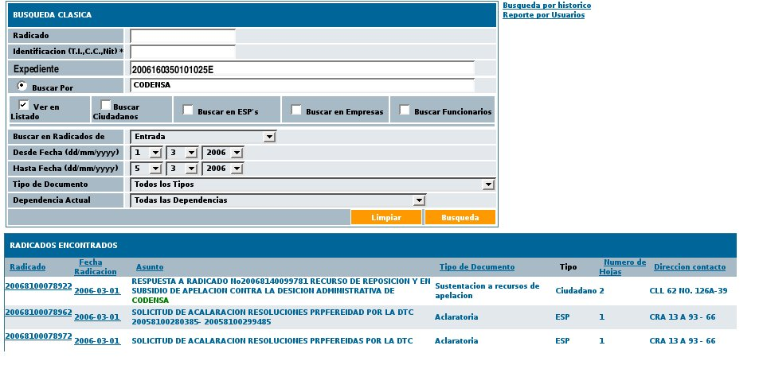

CU-ORFEO-57
Consultar Radicados.
Historia de revisión
FECHA
|
VERSION
|
DESCRIPCION
|
AUTOR
|
Marzo
31 de 2005
|
1.0
|
Ajuste
en la vista de consultas para incluir las búsquedas por
diferentes parámetros incluyendo las consultas.
|
Martha
Mera |
1.
Descripción
Permite las
consultas de los radicados por diferentes item que permita recuperar la
información teniendo en cuenta los niveles de seguridad por
usuario.
2. Actores
2.1
Usuario
Usuario
básico del sistema.
3. Flujo de Eventos
3.1.
Flujo Básico ó Normal : Consultar radicados.
3.1.1
Precondiciones
3.1.1.1. El actor debe haber ingresado al sistema.
3.1.1.2. El actor debe haber seleccionado el link de “CONSULTAS” en el menú
principal
1.
S: INICIO -
Presenta la ventana de consultas la cual está compuesta por:

1.1
Una caja de
texto rotulada "Radicado"
1.2
Una caja de texto rotulada "Identificación (T.I., C.C., Nit)
1.3
Una caja de texto rotulada "Expediente"
1.4 Una caja de texto rotulada "Buscar
por"
1.5 Cuadro de selección que
permite la búsqueda por "Ver en listado", "Buscar Ciudadanos",
"Buscar en ESP's", "Buscar en Empresas", "Buscar Funcionarios"
1.6 Lista de selección rotulada
"Buscar en Radicados de"
1.7 Lista de selección para
"Desde Fecha (dd/mm/yyyy)"
1.8
Lista de selección para
"Hasta Fecha (dd/mm/yyyy)"
1.9 Lista de selección rotulada
"Tipo de Documento"
1.10 Lista de selección rotulada
"Dependencia Actual"
1.11 Botón habilitado "Limpiar"
1.12 Botón habilitado "Búsqueda"
2. A: Diligencia los
diferentes parámetros que necesita para realizar la
búsqueda y presiona el botón "Busqueda"
1.1
"Radicado": se puede digitar una parte del número o su totalidad.
1.2
"Identificación (T.I., C.C., Nit): se digita el número de
documento del remitente o destinatario.
1.3
"Expediente"
: Para consultar los radicados que contienen un número de
expediente específico.
1.4 "Buscar
por" : Realiza la búsqueda de un texto el cual puede estar en
los campos de remitente/destinario, asunto, dignatario, cuenta interna.
1.5 "Ver en listado", "Buscar Ciudadanos",
"Buscar en ESP's", "Buscar en Empresas", "Buscar Funcionarios"
: Para indicarle al sistema en qué base de datos se debe buscar.
Si se selecciona "Ver en listado" el sistema realizará la
busqueda en todas las bases de datos
1.6 "Buscar en Radicados de" : seleccionar en qué tipo de
radicación se desea buscar (salida, entrada, memorando,
resolución, etc)
1.7 "Desde Fecha (dd/mm/yyyy)": se determina desde qué fecha de
radicación se hará la búsqueda.
1.8
"Hasta Fecha (dd/mm/yyyy)"
: se determina hasta qué fecha de radicación se
hará la búsqueda.
1.9 "Tipo de Documento"
: se puede hacer un filtro seleccionando el tipo de documento.
1.10 "Dependencia Actual": para indicar en qué dependencia se
encuentra actualmente el documento buscado.
1.11 "Limpiar": borra los parámetros seleccionados y deja
listo para una nueva consulta
1.12 "Búsqueda": se ejecuta la consulta.
3.
S: Despliega la
información solicitada teniendo en cuenta cada uno de los campos
que el usuario ha seleccionado mostrando la información asi:

3.1
Radicado: con un link de acceso a la imagen cuando el documento ya se
encuentre digitalizado.
3.2 Fecha de Radicación: con link de acceso a la
información general del documento
3.3 Asunto: Referencia del documento
3.4 Tipo de documento: el cual ha sido asignado teniendo en cuenta la
tabla de retención documental.
3.5 Tipo de Remitente: de acuerdo a la base de datos de donde se
tomó la información (ciudadano, esp, otras empresas,
funcionario)
3.6 Número de hojas: Cantidad de hojas digitalizadas.
3.7 Dirección de contacto: del remitente
3.8 Dignatario: Persona que firma el documento
3.9 Nombre remitente:
3.10 Usuario actual: usuario que actualmente se encuentra con el
radicado en alguna de sus carpetas
3.11 Dependencia actual: dependencia del usuario actual.
3.12 Usuario anterior: usuario anterior que poseia el radicado.
3.13 Días restantes: teniendo en cuenta el término
definido para cada tipo de documento
4.
A: da click en el
vínculo de "Radicado"
4.1. S: despliega la imagen
digitalizada
5. A: da click en el
vínculo de "Fecha de radicación"
5.1 S: despliega la
información correspondiente a los datos generales del radicado,
histórico, documentos y expediente. -
FIN
3.1.2
Post-condiciones
3.1.2.2. Se
debe tener en cuenta el nivel de seguridad del documento para permitir
consultar la infomación.
3.3.
Flujo Alterno : el usuario no tiene el mismo nivel de consulta que el
usuario
4.1 A:
da click en el vínculo de "Radicado"
4.2 S: envia un mensaje
indicando "No tiene permiso para acceder"
5.1 A: da click en el
vínculo de "Fecha de radicación"
5.2 S: envia un mensaje
indicando "No tiene permiso para acceder" - FIN